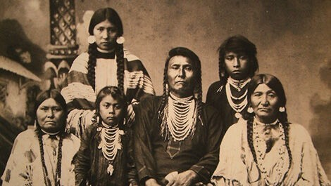

The Early Times
Ancient times - 1855The Native Americans inhabited.

The Naming and Founding of Everett
1890- 1893Henry Hewitt and his fellow team named Everett.
Economic Hardships
1897A slight dispute with the Snohomish board after a economic hardship
The Weyerhaeuser Group
1900-1910The Everett economy was refreshed after the Weyerhaeuser Group was founded, making the population triple in size
The Everett Massacre
1916The Everett Massacre happened, caused by a unrest in the workers due to unfair pay and unhealthy work conditions.
Paine Field
1930 - 1940After the making and founding of it, Paine Field began to be used as a base in WWll.
New Companies Rise
1967-1994The Everett economy grew and Boeing, Fluke,and Packard were all founded, improving Everett’s economy further. The naval station also got founded, making Everett a better port for boats
The New Port
2012-2024Everett has improved, gone through struggles, closed all its paper mills, and started construction of the Port of Everett Waterfront Place, and made commercial air service start in Paine Field
What's Going On Right Now
Present Day: 2025-2026Everett is a thriving and happy community that consists of a wide variety of cultures, aerospace, navals and technology forma ll around the world as well as founding many business from nearby cities